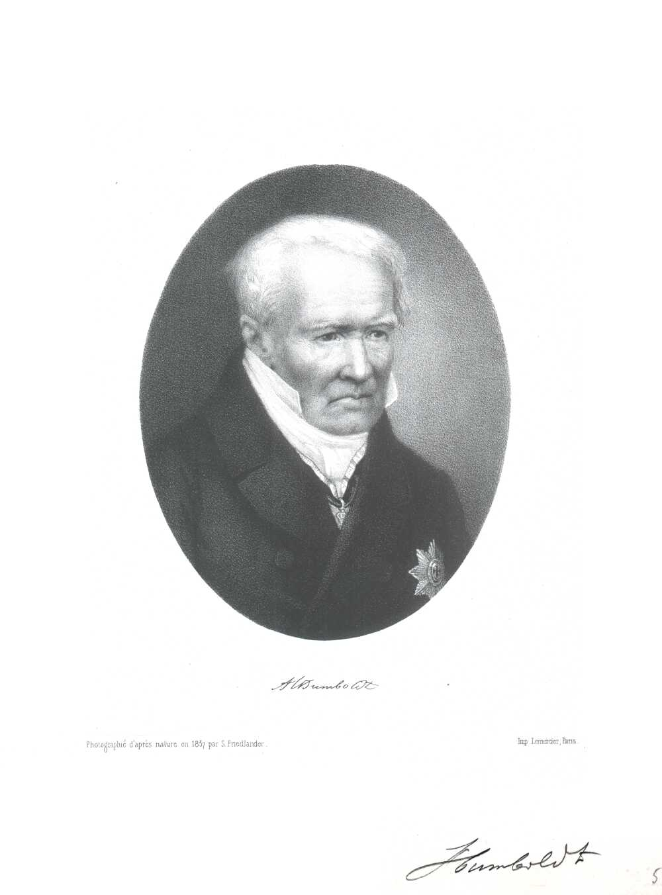
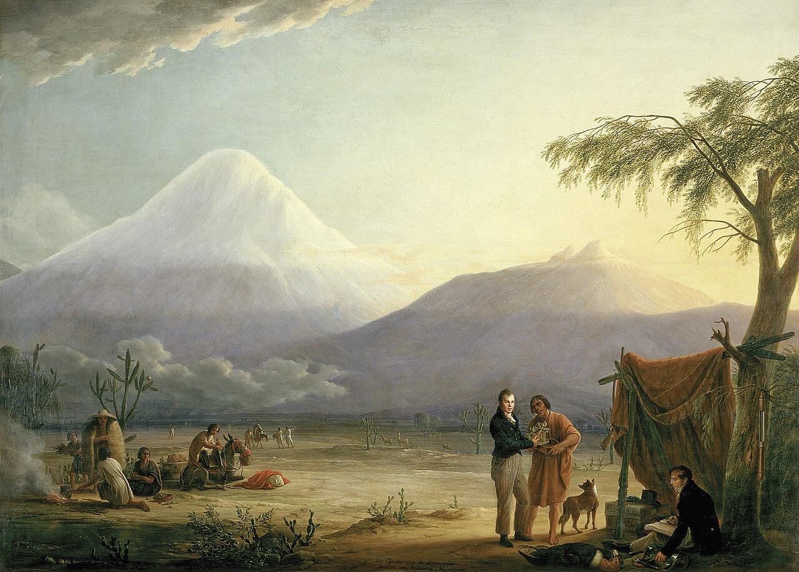
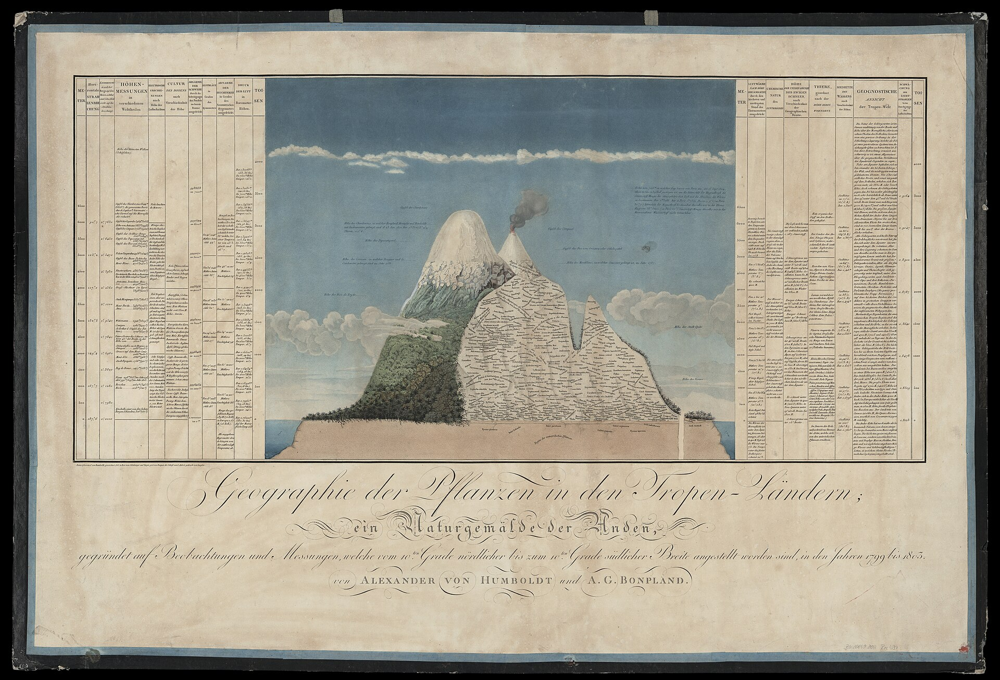
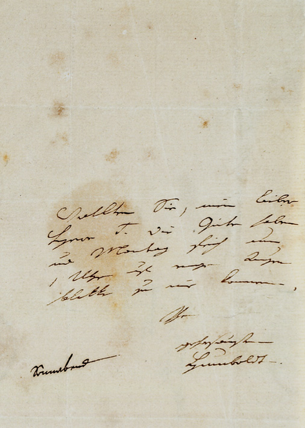
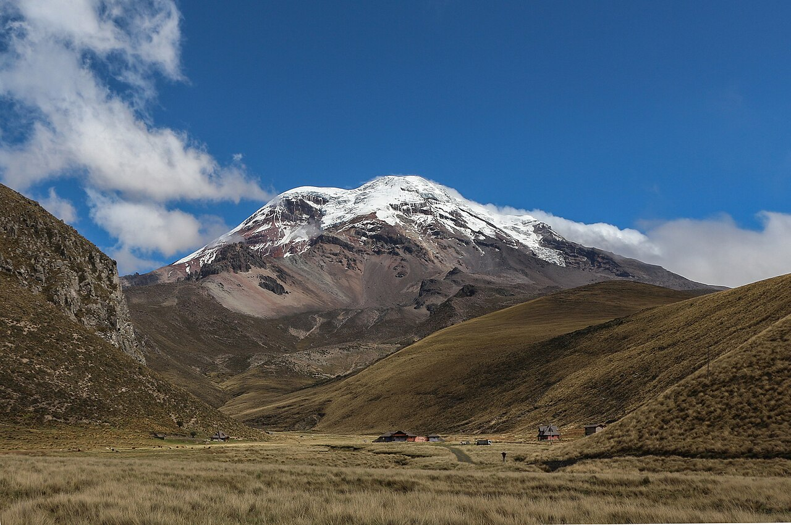
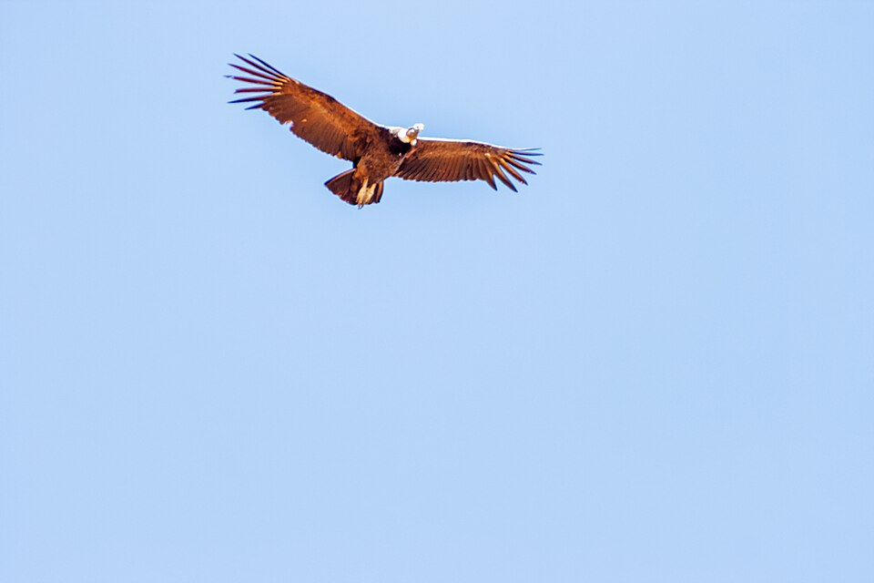
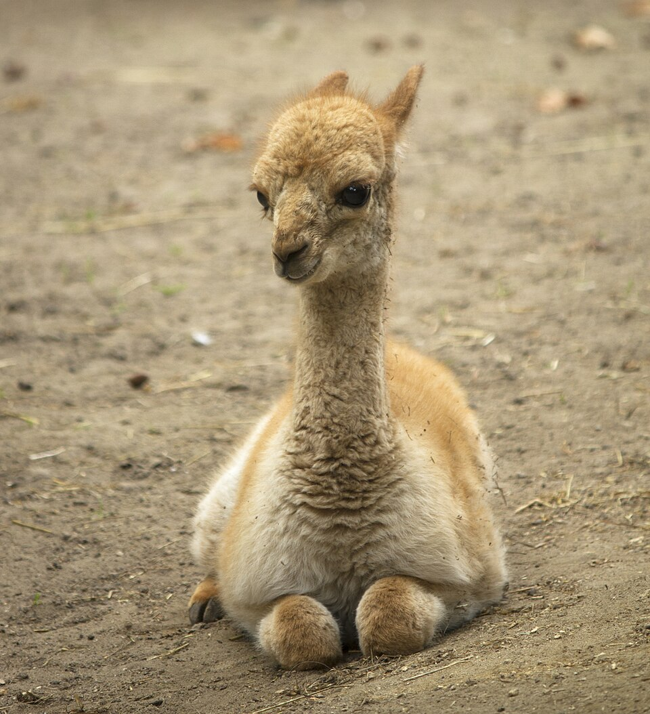
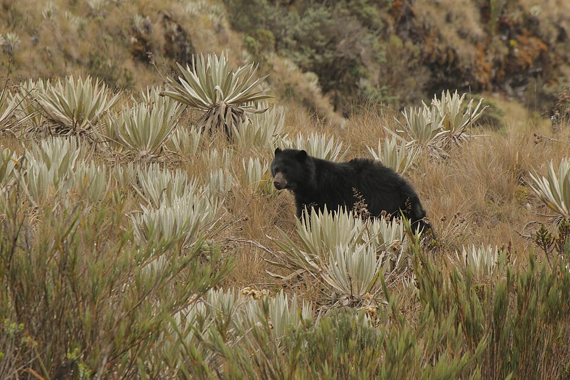

Ecology · Biogeography · History of Science
Alexander von Humboldt
Born in Berlin in 1769, Alexander von Humboldt was the first scientist to describe nature as a single interconnected web rather than a list of separate species. His five-year expedition across Latin America — and his death-defying climb up Chimborazo — produced the idea that climate, geology, plants, and animals all shape one another. That idea is the root of the word "ecology," and Humboldt is why we still call him its father.
Who Was Alexander von Humboldt?

Alexander von Humboldt was born September 14, 1769, in Berlin, into a wealthy Prussian family. He trained in geology and mining, but what he really wanted was to travel and measure the natural world firsthand. In 1799, at age 29, he used his inheritance to fund an expedition to Spanish America with the French botanist Aimé Bonpland — a journey that would last five years and reshape science.
Humboldt and Bonpland paddled hundreds of miles up the Orinoco River, confirming a natural waterway connecting the Orinoco and Amazon basins, and collected over 60,000 plant specimens, many entirely new to European science. But the expedition's defining moment came in 1802, when the pair attempted to climb Mount Chimborazo in present-day Ecuador, then believed to be the tallest mountain on Earth. Without modern climbing gear, in thin air and freezing wind, they reached roughly 5,878 meters (19,286 feet) — a world altitude record that stood for nearly 30 years.

What made the climb scientifically historic wasn't the altitude record — it was what Humboldt did with it. As he climbed, he recorded temperature, air pressure, humidity, and exactly which plants and animals appeared and disappeared at each elevation. At the base: palms and orchids. Partway up: oaks and ferns. Higher still: grasses and lichen. At the top: bare rock and snow. He realized the vegetation bands he saw climbing one tropical mountain mirrored the bands you'd cross traveling from the equator to the Arctic — climate, not geography alone, was organizing life into visible, predictable zones.
Back in Europe, Humboldt spent decades turning that insight into a new way of doing science. He invented isotherms — lines on a map connecting points of equal temperature — to show climate patterns at a glance, a tool still used on every weather map today. His multi-volume work Cosmos attempted something no one had tried before: a single unified picture of nature, from geology to astronomy to biology, all connected. He died in Berlin on May 6, 1859, celebrated across the world; more places on Earth are named after Humboldt than after any other person in history.
A Life of Exploration
- 1769 Born Friedrich Wilhelm Heinrich Alexander von Humboldt on September 14 in Berlin, Prussia.
- 1799 Sets sail for Spanish America with botanist Aimé Bonpland, funded by his own inheritance.
- 1800 Paddles the Orinoco River and confirms its natural link to the Amazon basin, the Casiquiare canal.
- 1802 Climbs Chimborazo to roughly 5,878 m — a world altitude record — and sketches the first cross-section showing vegetation changing by elevation.
- 1804 Returns to Europe after five years, bringing back over 60,000 plant specimens and thousands of pages of measurements.
- 1817 Publishes the first modern isotherm map, plotting lines of equal temperature across the globe.
- 1829 Undertakes a second major expedition, this time across Russia and Siberia at age 59.
- 1845 Begins publishing Cosmos, a multi-volume attempt to describe the entire natural world as one connected system.
- 1859 Dies May 6 in Berlin at age 89. Charles Darwin, on hearing the news, called him "the greatest scientific traveller who ever lived."
- 1866 German biologist Ernst Haeckel coins the word "ecology" for the study of organisms and their environment — a field built directly on Humboldt's ideas.
The Web of Life: Biogeography & Isotherms
Before Humboldt, most naturalists studied living things the way a collector fills a cabinet: catalog a species, name it, move to the next. Humboldt asked a different question — why does a plant grow where it grows, and not somewhere else? His answer connected climate, altitude, latitude, and geology into a single explanation, a field now called biogeography.
Naturgemälde: One Picture of an Entire Mountain
After Chimborazo, Humboldt drew what may be the single most influential scientific illustration of the 19th century: a cross-section of the mountain from base to summit, with every measurement he had taken — temperature, air pressure, plant and animal life, even the boiling point of water — plotted at the correct elevation. He called it a Naturgemälde, a "painting of nature." It was the first time anyone had shown, in one image, that a single mountain contains a compressed model of Earth's entire climate system, from tropical jungle to polar ice.


Isotherms: Making Climate Visible
To compare climates across the whole planet, Humboldt invented the isotherm — an imaginary line connecting every point that shares the same average temperature. Plotting isotherms revealed that temperature doesn't just depend on distance from the equator; ocean currents, elevation, and continental position bend those lines dramatically. Every weather map you've ever seen with colored temperature bands descends from this idea.
Chimborazo Vegetation-Zone Explorer

Drag the altitude slider in the side panel (or use a preset) — or click straight on the mountain — to climb Chimborazo the way Humboldt did. Watch the vegetation zone, temperature, and typical life change as elevation increases, and see the sea-level latitude that matches each zone's climate. That match is Humboldt's real discovery: one tropical mountain compresses the climate of the whole planet, equator to pole, into a single day's climb.
Hot, humid tropical rainforest. Palms, orchids, monkeys, and macaws thrive in the dense lowland canopy.
At sea level, this climate matches the equatorial tropics — think the heart of the Amazon or Congo basin.
Wildlife of the Andean Slopes
Three of the species Humboldt recorded on his way up Chimborazo, each living at a different elevation zone in the explorer above.



Key Ideas & Contributions
Showed that where a species lives is explained by climate, elevation, and geology working together — not chance. Founded the field of plant and animal geography.
Invented lines connecting points of equal temperature, letting scientists compare climates across continents at a glance. Still used on every weather map today.
His illustrated cross-section of Chimborazo plotted temperature, pressure, and species together by elevation — the first infographic connecting climate and life.
Reached roughly 5,878 m without modern gear, a 30-year altitude record, while recording the first systematic altitude-vs-life-zone data.
A five-volume attempt to describe the entire universe — geology, biology, astronomy, climate — as one connected, unified system.
Ernst Haeckel coined the word "ecology" citing Humboldt's holistic view of nature as the direct foundation for the new science.
Humboldt's Legacy Today
Charles Darwin carried Humboldt's Personal Narrative aboard HMS Beagle and later wrote that reading it as a young man had shaped the entire direction of his life — Darwin called Humboldt "the greatest scientific traveller who ever lived." Naturalists like Henry David Thoreau and John Muir, who both wrote about nature as an interconnected whole rather than a collection of parts, were working in a tradition Humboldt began.
Modern ecosystem science — tracing how energy and nutrients move between organisms and their environment, the same connections you can explore in this site's Ecosystems & Food Webs lesson — descends directly from Humboldt's insight that living things cannot be studied apart from their surroundings.
More places on Earth are named after Alexander von Humboldt than after any other person: the Humboldt Current off the coast of South America, Humboldt County in California, glaciers, mountain ranges, a penguin species, a squid, dozens of plants, and even a crater on the Moon. That naming pattern reflects how thoroughly his way of seeing nature — as one connected system — reshaped science after him.
Practice Problems
Use the environmental lapse rate: temperature drops about 6.5°C per 1,000 m of elevation gained.
Easy1. What did Humboldt invent to connect points of equal temperature on a map?
Easy2. Which word, coined in 1866 by Ernst Haeckel and inspired directly by Humboldt's work, is now used for the study of organisms and their environment?
Medium3. Using the lapse rate of 6.5°C per 1,000 m, and a sea-level temperature of 27°C, estimate the temperature at 3,500 m elevation. (Round to the nearest whole degree.)
Medium4. Roughly how high did Humboldt and Bonpland climb on Chimborazo in 1802 — a world altitude record at the time?
Challenge5. Which famous naturalist carried Humboldt's Personal Narrative aboard his ship and later called Humboldt "the greatest scientific traveller who ever lived"?
Related lessons: Ecosystems & Food Webs · Entomology: The Science of Insects.